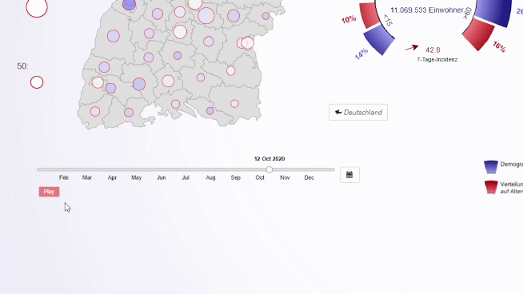

Hilfe
Hier erfährst du, wie du unser Tool benutzen kannst.
Klicke ein Thema an, um das Thema auszuklappen und weitere Informationen darüber zu erhalten.
Wie kann ich ein Bundesland auswählen?
Um ein Bundesland auszuwählen, kannst du entweder das Dropwown-Menü benutzen, oder über die Karte eines auswählen.
Wie kann ich einen Landkreis auswählen?
Landkreise kannst du nach Auswahl eines Bundeslands anklicken. Alternativ kannst du sie auch über die Suche auswählen.

Wie kann ich das Datum ändern?
Das Datum kann auf zwei Arten geändert werden:
1.) Timeslider: Über den Timeslider kann ein Datum durch Klicken, oder durch Ziehen des Sliders ausgewählt werden.
2.) Kalender: Durch Klick auf das Kalender-Item öffnet sich ein Kalenderblatt des aktuellen Monats. Hier kann ein Tag ausgewählt werden.
Um einen Tag eines anderen Monats auszuwählen, muss dieser zunächst mithilfe der Pfeiltasten ausgewählt werden.
Hinweis: Unser Tool beschränkt sich auf Werte des Kalenderjahres 2020, daher ist eine Auswahl nur von 01.01.2020 bis 31.12.2020 möglich.
Eine Grafik anheften
Um 2 Bundesländer oder Landkreise vergleichen zu könnnen, kann eine Darstellung angeheftet werden.
Dazu auf das Schloss klicken. Dann wird die Grafik angeheftet, und rechts daneben erscheint eine weitere Grafik mit der jeweiligen Auswahl.
Die Grafik auf der linken Seite wird sich nicht mehr verändern. So kann ein bestimmter Tag mit einem anderen verglichen werden.
Durch Klicken auf das Mülleimer-Icon oder "delete" wird die Grafik wieder entfernt. Ab sofort verändert sich wieder die linke Grafik.
Autoplay
Das Datum kann auch als "Video-Komponente" verwendet werden. Beim Drücken auf "Play" spielt läuft die Zeit. Abhängig von der Betrachtungsebene und ausgewählten Elementen werden alle sichtbaren Komponenten (Mit Ausnahm einer gepinnten Grafik) auf den jeweiligen Tag aktualisiert.
Wieso ändert sich die Größe der Kreise nicht linear?
Um Unterschiede bei niedrigen Inzidenzzahlen besser darstellen zu können, wächst der Kreis-Radius für niedrige Inzidenzen nicht-linear. Für Inzidenzen unter 300 wird der Radius mittels einer Wurzelfunktion über die Inzidenz berechnet. Für Werte über 300 wächst der Radius linear. So soll vermieden werden, dass die Kreise nicht zu groß werden, und trotzdem der Lie Factor (also eine Verfälschung der Darstellung) minimal bleibt.
Um Inzidenzen ideal vergleichen zu können, orientiert sich die Größe der Inzidenzkreise zudem immer am zu Verfügung stehenden Platz. Der Maßstab der Bundesländer ist jedoch nicht immer gleich groß, um den Platz maximal auszunutzen. Damit die Daten nicht verfälscht werden, ändert sich damit auch die Größe der Legende.